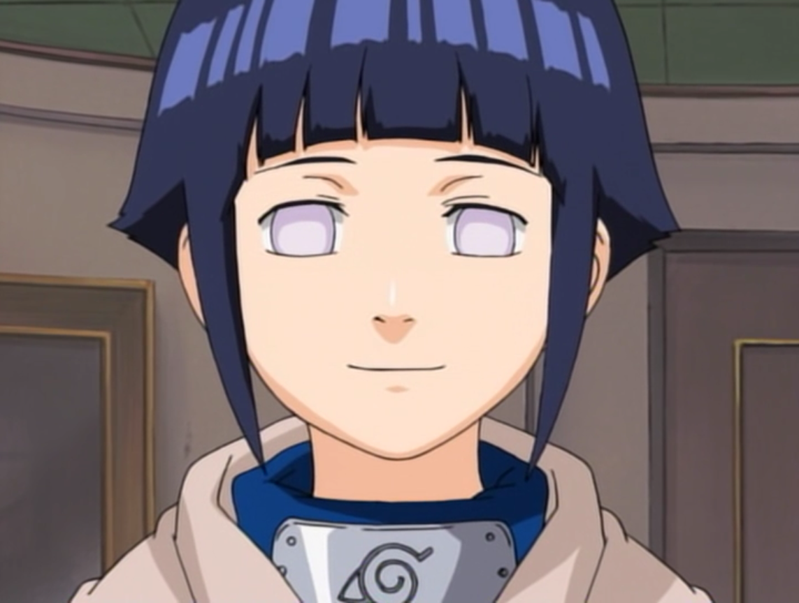

About
Naruto is a Japanese manga series written and illustrated by Masashi Kishimoto. It tells the story of Naruto Uzumaki, a young ninja who seeks recognition from his peers and dreams of becoming the Hokage, the leader of his village.Naruto is generally a very simple minded, easy going, cheerful person. He often rushes things, and misses obvious things such as Hinata's constant shyness around him. In the beginning of the series, Naruto is very fun loving, often pulling pranks on fellow villagers. This usually ends in a scolding from Iruka Umino.
Character reviews
Is Naruto a good character?
Naruto is a good character because he is one of those people that is pure of heart meaning all he really wants to help people. Even against people he's fighting no matter what they've done he wants to help them. Because everyone think Naruto is underdog when he is not.
Characters
Main characters
Naruto Uzumaki.
Sasuke Uchiha.
Sakura Haruno.
Kakashi Hatake.
Boruto Uzumaki.
Sarada Uchiha.
Mitsuki.
Konohamaru Sarutobi.
Videos
My inspiration
